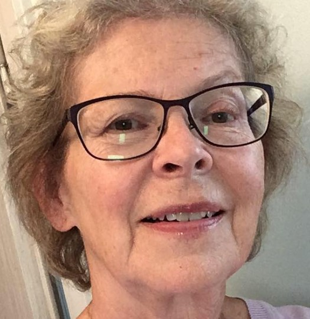

|
Född
16 jan 1973
i Kumla (T)
1
.
|
|
Niklas Olov Rönnberg
Född 16 jan 1973 i Kumla (T) 1 . |
F
Leif Erik Gustaf Rönnberg.
Född 1 dec 1942 i Hedemora (W) 2 . |
||
|
 M Marianne Katrine Rönnberg f Jägeberg.Född 22 feb 1944 i Marmorbruket, Krokek (E) 3 . |
MF
Karl Gustaf Jansson Jägeberg.
Född 14 jul 1915 i Karlshov, Enebymo, Norrköping, Norrköpings Östra Eneby (E) 4 . Död 1 feb 1946 i Marmorbruket, Krokek (E) 5 . |
MFF Karl Emil Jansson. Född 3 dec 1870 i Hummelkärr/Karlsro, Västra Ed (H) 6 . Död 16 jan 1953 på Almvägen 13, Gård 4, Kv Stättan, Enebymo, Norrköping, Norrköpings Östra Eneby (E) 7 . |
|
|
MFM Anna Augusta Laurentia Jansson f Larsson. Född 17 nov 1882 i Gunviken, Västra Vingåker (D) 8 . Död 30 jan 1959 i Lenningska sjukhemmet, Strömbacken, Norrköping, Norrköpings Sankt Olai (E) 7 . |
|||
|
MM
Elsa Judit Marianne Arkesten f Eriksson.
Född 2 jul 1916 i Kv Äpplet, Gamla Staden, Norrköping, Norrköpings Sankt Olai (E) 9 . Död 29 jan 1996 i Norra Promenaden 120 B, Gård 12, Kv Vargen, Marielund, Norrköping, Norrköpings Matteus (E) 7 . |
|||
|
Gift
Sofie Annica Charlotte Rönnberg f Folkeson. Född 1 okt 1975 i Landeryd (E) 14 . |
Framställd 12 aug 2026 med hjälp av Disgen version 2025.